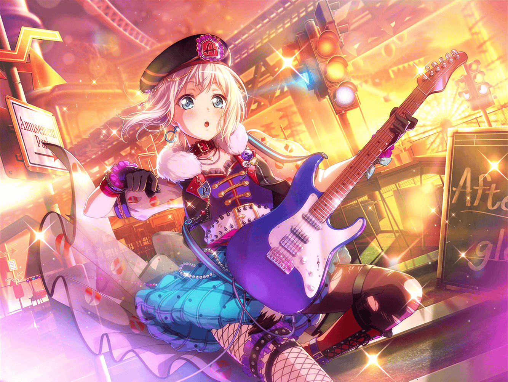

CiRCLE カフェテリア
モカ
ふい〜……一息、一息〜
美咲
（……なんかノリで二人でお茶することになっちゃったけど……）
モカ
お、美咲ちんが飲んでるの、ナッツラテ？ おいしそ〜
美咲
あー、うん。ナッツフレーバー、結構好きで
モカ
へ〜。あ、美咲ちんとミッシェルって好きな食べ物とかって
同じなの〜？
美咲
（……この、なんとも言えないゆる〜いボケ……
テンポがつかみにくい……）
美咲
さあ〜？ ミッシェルはまた別のものが
好きかもしれないねえ〜？
モカ
へへー、たしかに〜。
ミッシェルはクマだしね〜
美咲
（……けど、このゆるい感じ、ラクだな〜。
普段一緒にいるのがこころとか、はぐみだからなあ……
あの暴走特急……）
蘭
あれ？ モカじゃん。
……と、奥沢さん？
巴
よっ。なんか意外な組み合わせだな？
何してたんだ？
モカ
見てわかるでしょ〜。美咲ちんと親睦を深めるための
意見交換会をしてたんだよ〜
つぐみ
そっか、美咲ちゃんと用事があったから、
今日、家での勉強会、来れなかったんだね
モカ
まあ、モカちゃん天才なとこあるしな〜。
勉強しなくても平気だしさ
ひまり
美咲ちゃん、ゴメンね。
モカのこのテキト〜な感じ、大丈夫？
美咲
いやいや、青葉さんのノリ、おもしろいと思うよ
つぐみ
あ、その漫画！ モカちゃんが前に気になってるって
言ってたやつだよね。単行本、もう出てたんだ
モカ
そうそうー。本屋にこれを買いにいったら、
ミッシェルの代わりに本を買いにきた美咲ちんに偶然
会ったってわけ〜
蘭
ていうか、こんなとこでのんびりしてていいわけ？
イベントのチラシ作る担当になったって言ってなかった？
美咲
（え、ミッシェルのくだりスルー！？
やば……この集団、青葉さんの扱いに慣れすぎてる）
モカ
ま〜、なんとかなるでしょー。
ママもいるし
ひまり
モカママ、プロだもんね〜。最強じゃん
モカ
まあ、モカちゃん自体も天才だし〜？
いけるいけるー
蘭
はいはい、天才天才。
そんなこと言って、自分でハードルあげてるのわかってんの？
モカ
高い壁ほど越えがいがあるってもんよ〜
巴
あっはは！ モカ、がんばれよー？
お客さん１万人くらいくるようないいチラシ、
期待してるからな！
ひまり
１万て！ も〜、巴は話盛るんだから〜
蘭
それはひまりもでしょ
つぐみ
モカちゃん、私も応援してるよ！
何か手伝えることがあったら、遠慮なく言ってね！
モカ
うん、ありがとねー。
じゃ、みんなは勉強会だっけ？ がんばって〜
ひまり
うんっ！ じゃ、明日ねー！
美咲ちゃん、モカのことよろしくね！
美咲
え！？ よ、よろしくって？
……あ、行っちゃった
美咲
聞いてて思ったけど、Afterglowの人達のやりとりって
テンポよくておもしろいね
モカ
これが『いつも通り』ってやつよ〜
美咲
うん、そんな感じした。
ポスター、期待されてるみたいだったね
モカ
いや〜、参ったな〜……ちゃんとやらないとな〜
美咲
（青葉さん、表にはガッツリ出てないけど、
期待されて嬉しそう……その感じ、なんかわかるなあ……）
モカ
さてー、漫画、読み終わっちゃったし、
こっちのデザインの本も読んでこうかなー。
美咲ちんはどーする？
美咲
じゃあ、あたしはミッシェルの代わりに、
このDTM教本を読んどこうかな
美咲
なんかあったときにミッシェルにDTMが教えられるように
モカ
おおー、いい心がけじゃーん。
あたしも、『この本で身長が３センチ伸びました！』みたいな
感じでがんばっちゃうよー
美咲
いやいや、さすがにそれはおかしいってば
モカ
背が３センチも伸びたら、たかーいハードルだって
簡単に越えられちゃうかもしれないし？
美咲
意味わかんないって、もはや
モカ
へへー。じゃ、お茶のおかわり、買いにいこー♪